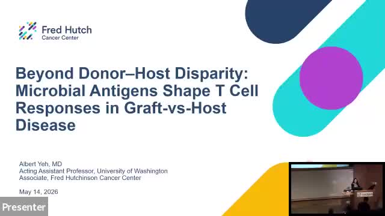

Allogeneic stem cell transplantation exposes the new donor immune system to a vast microbial community in the recipient gut. We are investigating how T cells recognize microbial antigens in this setting and how those responses shape graft-versus-host disease (GVHD), immune reconstitution, and post-transplant outcomes. Current work combines pangenome analyses of commensal bacteria, identification of conserved candidate T-cell epitopes, and murine transplant models.
